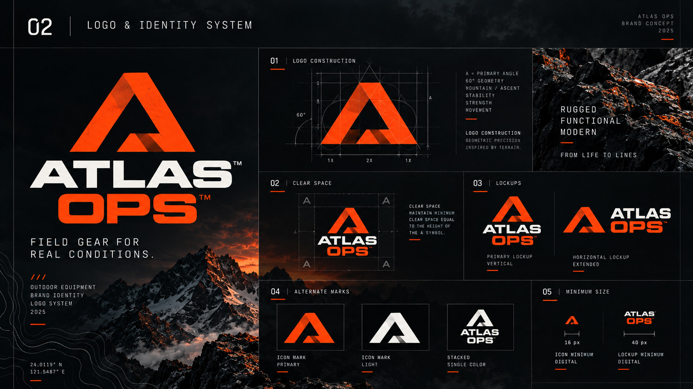

標誌與識別：幾何 A 的構成、留白和不同背景上的應用方式。以 60 度斜角切面與折疊負空間象徵山岳峰稜，作為全品牌唯一且權威的標準視覺基準（Standard Benchmark）。
Logo & Identity System: Geometric 'A' emblem construction, 60-degree angled facets, and negative-space fold geometry. Serves as the authoritative visual anchor for the brand.